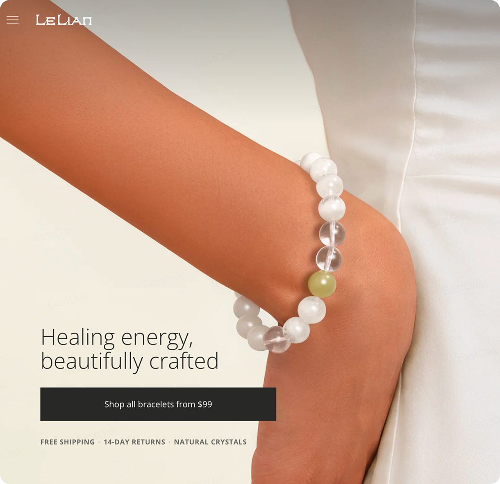
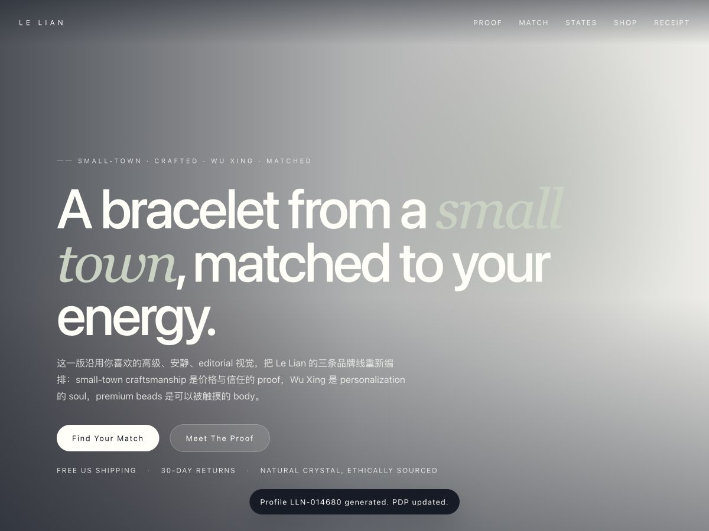
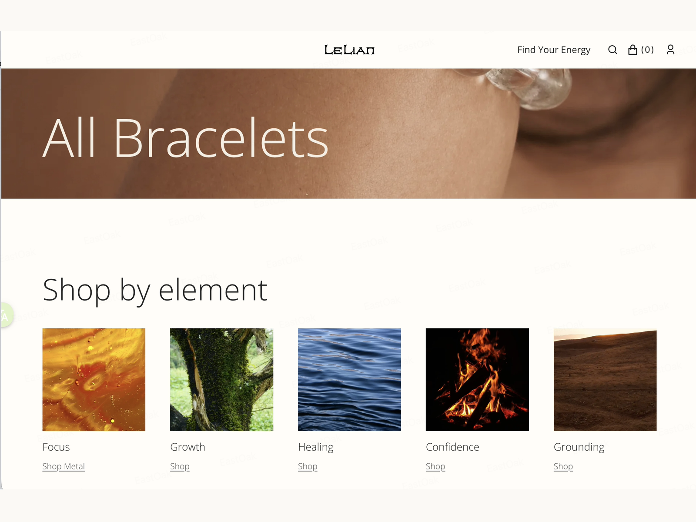
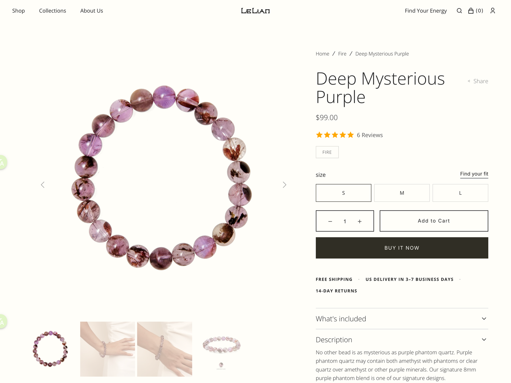
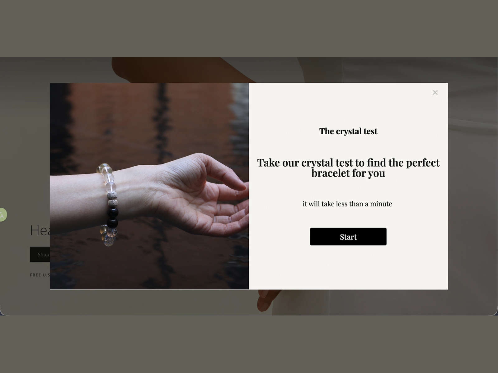

Metal · Wood · Water · Fire · Earth
Back to all work
COMMERCE UX · DESIGN TO CODE
LELIAN
A Shopify Store for 48 Products
Starting with product taxonomy and page design, I used Codex to assist with frontend implementation and refinement. I completed the homepage, collection pages, product pages and quiz entry, then checked the experience across desktop, tablet and mobile.
My roleProduct Taxonomy · Page Design · Shopify Build

PROJECT OVERVIEW
[SOLO BUILD]
COMMERCE UX · DESIGN TO CODE
Independent Design & Development
- MY ROLE
- Information architecture, UX/UI, content configuration, development and launch checks.
- TEAM
- Solo Project
- SCOPE
- Homepage · Collection · PDP · Quiz
- TOOLS USED
- FigmaFigma MakeShopifyCodexAdobe
01 · INFORMATION ARCHITECTURE
Keep the Five Elements story. Offer simpler ways to shop.
The original catalog was organized around Metal, Wood, Water, Fire and Earth. I retained that brand narrative while adding entry points for energy, occasions, color and material, zodiac signs and gifting, so shoppers unfamiliar with the Five Elements could still begin browsing.
01 · PRODUCT TAXONOMY
Products use six tag categories: Five Elements, energy, occasion, zodiac, color and material. Tags support automated collections, while metafields manage recommendations and product stories. The same bracelet can appear through multiple shopping paths.
Focus · Healing · Confidence
Work · Mornings · Travel
Zodiac combinations
Color
Crystals & materials
Customer-facing Shopping Paths
Six storefront entry points: Energy / Moment / Color & Stone / Zodiac / WuXing / Gifts
02 · DESIGN TO SHOPIFY
Compare different ways to browse and buy.
I defined the page structure, then used Figma Make to generate browsable directions. I reviewed whether categories were easy to find, product differences were clear and purchase options were grouped coherently.
REAL PROJECT EVIDENCE
Specify the page, then review the implementation.
After selecting a direction, I detailed the page structure, components and responsive requirements. Codex assisted with implementation, while I checked layout, interactions and content across screen sizes. The record below documents one collection-template build.
MY INPUT
My Brief
- Page structure
- Start with a heading and short introduction, followed by category buttons and the product grid.
- Navigation pattern
- Use text and button navigation for subcategories instead of image cards.
- Interaction goal
- Each selection opens the relevant collection.
CODEX DELIVERY
Implementation & Checks
Completed four category hub pages:
- Shop by Energy
- Shop by Color & Stone
- Shop by Moment
- Shop by Zodiac
- Navigation checks
- Connected the navigation, All Bracelets page and WuXing entry. Historical launch checks recorded HTTP 200 responses for all four pages.
- Operations handoff
- The Collection Link Hub allows copy, links and layout settings to be updated in the Shopify theme editor.
01INFORMATION FRAMEWORK
Explore the organization of energy matching, product information and recommendations.
AI HTML / STRUCTUREOPEN ↗
02BRAND FRAMEWORK
Bring the town story, Five Elements framework and crystal products into one narrative.
AI HTML / BRANDOPEN ↗
03PREFERRED VISUAL
Establish an initial visual direction through typography, color and whitespace.
AI HTML / VISUAL V1OPEN ↗
04VISUAL REFINEMENT
Refine tracking and line spacing, and add shipping, returns and natural-crystal information.
AI HTML / VISUAL V2OPEN ↗
05NAVIGATION SYSTEM
Connect Energy, Wu Xing, Beads and other shopping paths through a mega menu.
AI HTML / NAV V1OPEN ↗
06SELECTED DIRECTION
Refine corner radii and menu positioning to prepare the direction for responsive development.
AI HTML / SELECTEDOPEN ↗
Browse directions horizontally · Select OPEN to view a full page
INDEPENDENT DESIGN & DEVELOPMENT · CODEX-ASSISTED
Turn 48 bracelets into a browsable, shoppable store.
My contributionIndependently designed the product taxonomy, pages and interactions, configured content and checked the launched experience across desktop, tablet and mobile.
Codex assistanceAssisted with writing and refining code against the page requirements. I reviewed the implementation and decided which content and interactions needed adjustment.




AI-ASSISTED CONTENT DIRECTION
Add context through styling and everyday use.
I used AI to explore garden, outdoor and everyday styling imagery, then checked bracelet appearance, color and contextual fit before selecting images for the homepage and marketing content.
FROM EXPLORATION TO HOMEPAGE
Bracelet styling for the homepage.
05 · PAGE-LEVEL EXPLORATION
With the overall direction set, refine information structure and brand expression at page level.
These HTML explorations focused on how collections supported selection, how a Water landing page built a theme, and how product pages explained value and supported purchase decisions.
7 SOURCE FILES6 UNIQUE DIRECTIONS
One source file duplicated Water Premium exactly. It remains archived but is not shown twice.
01 · COLLECTION
From browsing everything to finding a relevant bracelet.
Compare a complete catalog hub with guided filtering: should shoppers start with the full range or with their own needs?
02 · WATER COLLECTION
One theme. Immersive storytelling or clearer product cards?
Explore a complete Water Collection atmosphere, then reduce decoration and tighten the hierarchy to connect the theme more directly to products.
03 · PDP
Move from showing the product to explaining its value.
Use the same Mosaicalico bracelet to compare the initial and refined product pages, focusing on the relationship between imagery, value, specifications and the call to action.